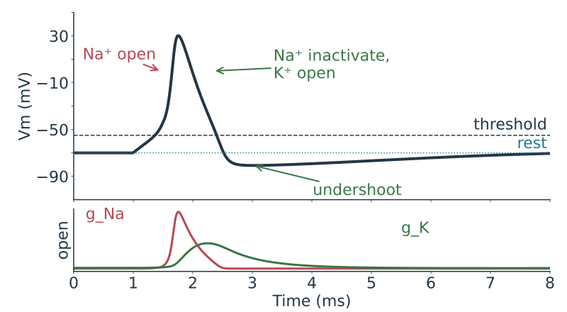
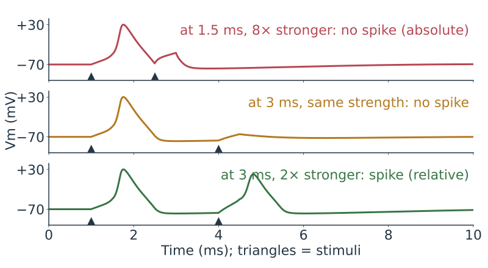
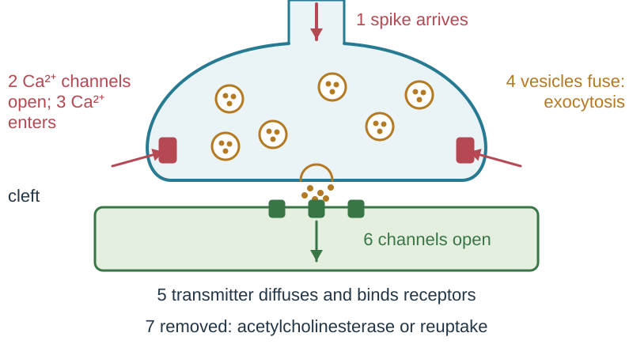
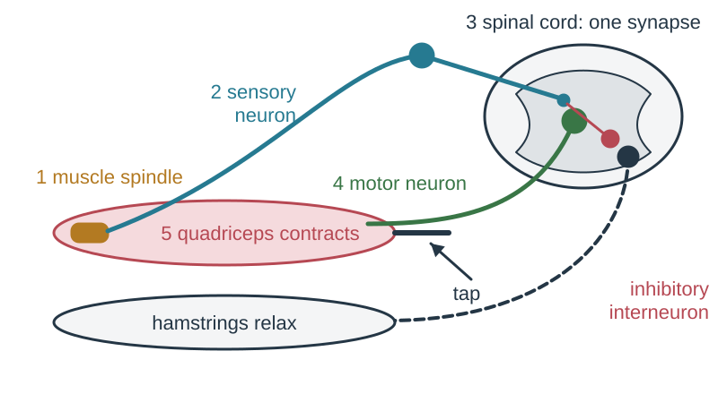
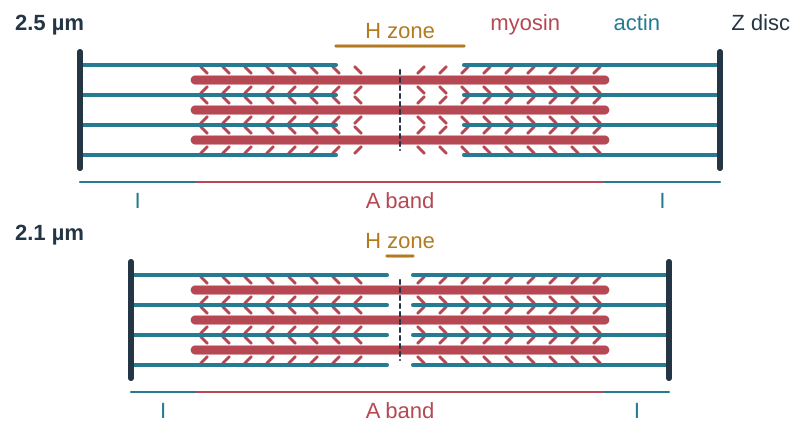
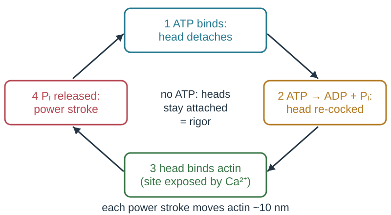
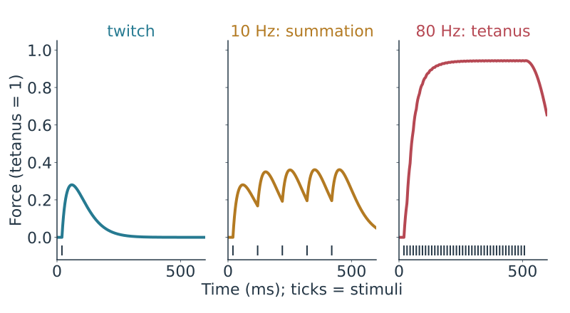
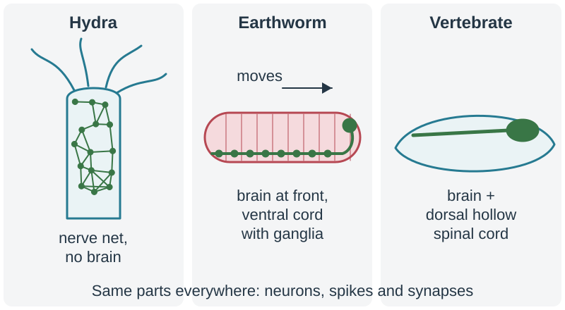

Week 5 — Nerves, muscles and hormones: how the body controls itself
Animal and Plant Physiology
About this lecture
A doctor taps the tendon below your knee and your leg kicks about 30 ms later, before you have decided anything. In A1 every feedback loop had a sensor, a control centre and an effector, and in A4 the messenger of the water loop was a hormone, ADH. Who are the sensors, controllers and messengers, and how does a signal turn into movement? Nerves carry fast, targeted messages; hormones carry slower messages through the blood.
The electrical signal: ion gradients, the resting potential and the action potential.
Passing it on: conduction, synapses and the knee-jerk reflex.
The effector: how a nerve impulse makes a muscle contract, and how force is graded.
The other messenger: nervous systems across animals, hormones and the endocrine glands.
Reproduction: the hypothalamic–pituitary–gonadal axis, where feedback changes sign.
Ion gradients and equilibrium potentials
The Na⁺/K⁺-ATPase (3 Na⁺ out, 2 K⁺ in per ATP) keeps the gradients:
Ion
Outside (mmol L⁻¹)
Inside (mmol L⁻¹)
Equilibrium potential
K⁺
5
140
−89 mV
Na⁺
145
15
+61 mV
Cl⁻
110
10
−64 mV
Nernst equation (37 °C): the voltage at which an ion’s electrical force exactly balances its concentration gradient.
Undershoot (~−80 mV) while K⁺ channels stay open; then rest.
The spike lasts 1–2 ms. Very few ions move (squid axon: Na⁺ inside rises < 0.001 %); the pump is not needed for any single spike.

If every spike looks the same, how does a neuron signal “stronger”?
All-or-none: refractory periods and coding
Absolute refractory period (~1–2 ms): no stimulus fires a second spike; Na⁺ channels are inactivated.
Relative refractory period (a few ms): a stronger stimulus is needed; some Na⁺ channels still inactivated, K⁺ channels still open.
So the spike travels one way, and firing rate has a ceiling of a few hundred per second.
Spikes are all-or-none. A stronger stimulus raises the frequency of spikes and the number of neurons recruited.

How fast does the spike travel to the end of the axon?
Try it: threshold and refractory period
Conduction velocity: diameter and myelin
Larger diameter → lower internal resistance → current spreads further ahead → faster.
Myelin (Schwann cells; oligodendrocytes in the CNS) insulates the axon. Spikes regenerate only at nodes of Ranvier ~1 mm apart and jump between them: saltatory conduction.
Transmitter crosses the 20–40 nm cleft and binds receptors.
Ion channels open: the postsynaptic potential changes.
Removal: acetylcholinesterase breaks down ACh; serotonin and noradrenaline are taken back up (reuptake).

Ca²⁺ is the trigger. Delay ~0.5 ms. One-way: vesicles only before, receptors only after the cleft. Does the transmitter excite or inhibit the next cell?
Excitatory or inhibitory: the receptor decides
EPSP moves V_mtowards threshold; IPSP moves it away, or holds it below.
Now we can trace a complete pathway: the knee-jerk reflex.
The knee-jerk reflex: a complete loop
Receptor: muscle spindle in the quadriceps.
Afferent: sensory neuron into the dorsal spinal cord.
Integrating centre: spinal cord, one synapse.
Efferent: motor neuron.
Effector: quadriceps contracts; the leg kicks.
The contraction opposes the stretch: negative feedback for muscle length (A1). An inhibitory interneuron relaxes the hamstrings. No brain needed: ~30 ms.

The motor neuron has fired. How does its spike make the muscle contract?
The neuromuscular junction
An action potential arrives at the motor-neuron terminal.
Acetylcholine is released: a chemical synapse, as before.
ACh opens nicotinic channels: an end-plate potential depolarises the muscle fibre to threshold, every time.
Each fibre has one junction; one motor neuron branches to many fibres.
The large safety margin means one motor-neuron spike = one muscle spike.
When a muscle shortens, which of these bands change?
Sliding filaments: which bands shorten
Band
Contains
When the sarcomere shortens
A band
Full length of thick filaments
Unchanged
I band
Thin filaments only
Shorter
H zone
Thick filaments only
Shorter
Z to Z
One sarcomere
Shorter
Thick and thin filaments
Unchanged
Sliding-filament model: myosin pulls the thin filaments towards the centre. No filament changes length.

What makes the myosin heads pull, and let go?
The cross-bridge cycle: what ATP does
ATP binding makes myosin detach from actin (step 1).
ATP hydrolysis re-cocks the head (step 2).
Pᵢ release drives the power stroke (step 4): ~10 nm per cycle.
ATP also powers relaxation: the SR Ca²⁺ pump.
Rigor mortis: after death ATP runs out, myosin cannot detach, and muscles lock rigid.

One cycle moves a filament 10 nm. How does a whole muscle produce a weak or a strong pull?
Grading force: motor units and summation
A motor unit = one motor neuron + all its muscle fibres: ~10 fibres in eye muscles (fine control), ~2,000 in the calf (large force).
Recruitment: activate more motor units, small ones first.
Summation: a twitch lasts ~100 ms, a spike ~2 ms. Spikes at high frequency add twitches up to a smooth tetanus, 3–4× the twitch force.
Force is never graded by larger action potentials: they are all-or-none.

More force costs more ATP. Does it always produce more work?
Try it: summation, tetanus and recruitment
Work, power and the cost of holding still
WorkW = F \times d (force in the direction of movement × displacement).
PowerP = W / t.
Example: a muscle lifts a load with 30 N through 0.20 m in 0.50 s.
Calculation
Result
Work while lifting
30 N × 0.20 m
6.0 J
Mean power while lifting
6.0 J ÷ 0.50 s
12 W
Work while holding the load still
30 N × 0 m
0 J
Holding still is an isometric contraction: force without shortening. Cross-bridges keep cycling and Ca²⁺ is continuously pumped, so ATP is used and turned into heat.
Muscle converts at most ~25 % of the chemical energy into work. Lifting 6 J costs about 24 J of metabolic energy.
Skeletal muscle is switched by troponin. Do the heart and the gut wall use the same switch?
Three muscle types, three Ca²⁺ switches
Skeletal
Cardiac
Smooth
Activated by
Motor neuron (ACh)
Own pacemaker cells; spreads via gap junctions
Autonomic nerves, hormones, stretch
Source of Ca²⁺
SR, opened by T-tubule voltage sensors
Ca²⁺ entry triggers SR release (Ca²⁺-induced Ca²⁺ release)
Extracellular fluid and SR
Ca²⁺ sensor
Troponin on the thin filament
Troponin
Calmodulin
How myosin is switched on
Tropomyosin moves off actin
Tropomyosin moves off actin
Ca²⁺–calmodulin activates myosin light-chain kinase (MLCK), which phosphorylates myosin
Tetanus possible
Yes
No (long refractory period, ~250 ms)
Slow, sustained tone
All three use actin and myosin and the cross-bridge cycle.
Smooth muscle relaxes when myosin light-chain phosphatase removes the phosphate.
All of these are controlled by nervous systems. How are nervous systems organised across animals?
Nervous systems across animals
Hydra (cnidarian): diffuse nerve net, no brain, radial body.
Earthworm:cerebral ganglia plus a ventral nerve cord with a ganglion in each segment. Insects: same plan, ganglia fused.
Mammal:brain + dorsal, hollow spinal cord (CNS) and a peripheral nervous system (somatic, autonomic).
Cephalisation: animals that move forwards concentrate sense organs and neurons at the front.

Nerves are fast and point-to-point. What about messages that must reach the whole body for hours?
Hormones: two chemical classes
A hormone is secreted into the blood and reaches every cell (A3), but only cells with the matching receptor respond.
Peptide hormones
Steroid hormones
Made from
Amino acids
Cholesterol
Solubility
Water-soluble
Lipid-soluble
Transport in blood
Dissolved in plasma
Mostly bound to carrier proteins
Receptor
Cell surface (plasma membrane)
Inside the cell (cytoplasm or nucleus)
Mechanism
Second messengers (e.g. cAMP) change the activity of existing proteins
Hormone–receptor complex binds DNA and changes gene transcription
−70 mV, close to E_\text{K} because K⁺ permeability dominates
Action potential
Na⁺ channels open (positive feedback), inactivate; K⁺ channels repolarise
Coding and conduction
all-or-none; intensity by frequency and recruitment; faster with diameter and myelin
Synapse
Ca²⁺ entry → transmitter release; the receptor decides excitation or inhibition
Muscle
ACh → muscle AP → T tubule → SR Ca²⁺ → troponin; ATP detaches myosin
Force
graded by recruitment and summation; isometric holding does no work but uses ATP
Hormones
peptides: surface receptors, second messengers; steroids: intracellular receptors, genes
Reproduction
HPG axis: negative feedback, switching to positive before ovulation
The animal half: a body too large for diffusion (A1) fuels its cells (A2), supplies O₂ by bulk flow (A3), keeps their fluid stable (A4) and coordinates it all by feedback through nerves, muscles and hormones (A5).
Next (P1 — Building a functioning plant): a plant faces the same problems of exchange, transport and control, but cannot run, pump blood or send nerve impulses.


.jpg){kind=link}